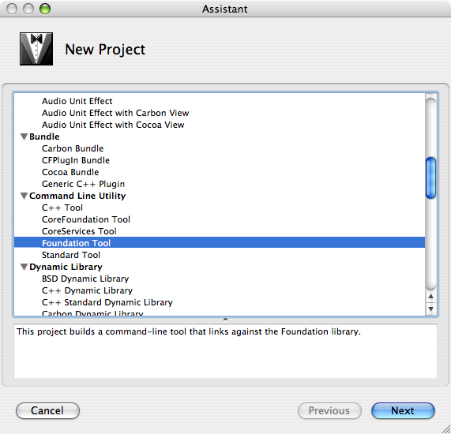
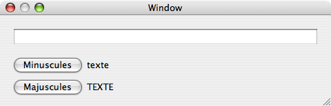
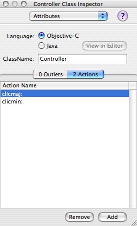
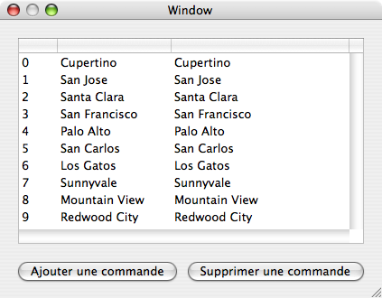
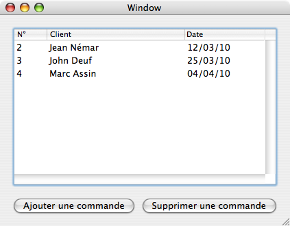

Bonjour à tous. ;) Si le Site du Zéro est parfait pour les Windowsiens et Linuxiens qui souhaitent apprendre à développer de vraies applications sous leur système, les "OS X-iens" sont, eux, un peu pénalisés. En effet, Java comme Qt permettent de développer pour OS X, mais il est très difficile de faire en sorte que les applications réalisées avec ces technologies ressemblent à quelque chose sous OS X.
Si vous avez appris le C avec le tutoriel officiel, au moins les deux premières parties (ni SDL ni C++ ne sont requis), alors vous pouvez maintenant apprendre à développer spécifiquement pour OS X, avec XCode, Interface Builder, et tous les outils Apple, pour créer des applications 100 % Mac. ;)
Si vous connaissez Qt, Objective-C joue le même rôle que C++ : Cocoa est écrite dans ce langage, et c'est le plus utilisé pour développer avec cette API. Il n'est théoriquement pas spécifique à OS X, mais est très peu utilisé ailleurs. Rassurez-vous, il n'est pas particulièrement compliqué si vous connaissez déjà un petit peu le C. ;)
Le langage Objective-C, abrégé en ObjC, est un sur-ensemble strict du langage C, dans le sens où il ne modifie rien de ce qui touche au C, il ajoute simplement des concepts : lorsque vous écrirez du code pour Cocoa, vous mélangerez en fait les deux, en retrouvant les instructions conditionnelles, les boucles while et for , les pointeurs, etc., que vous connaissiez jusqu'à présent. Rassurez-vous cependant : la vie sera nettement facilitée par les objets proposés par Objective-C. :D
En effet, si ce langage est défini par dessus C, c'est pour introduire des concepts de haut niveau, moins techniques et permettant plus d'abstraction (on se préoccupe moins du fonctionnement de la machine que de la réalisation de l'application ; par exemple, vous n'utiliserez jamais malloc sur des objets ObjC). Parmi ces concepts se trouve la fameuse POO, celle à laquelle vous croyiez peut-être échapper en n'apprenant pas C++ !
Mais rassurez-vous, tout se passera bien, et il sera sans doute plus facile pour vous d'apprendre Objective-C si vous ignorez encore tout de la POO. Il y a en effet quelques petites différences entre Objective-C et C++. Le premier s'inspire en fait du langage SmallTalk (dont je reparlerai probablement dans quelques mois ( :D ) à la suite de ce tutoriel). En tant que tel, les concepts développés par Objective-C sont simples à comprendre et à mettre en œuvre.
Voici quelques principes théoriques (et la syntaxe correspondant à leur mise en œuvre) qu'il vous faudra retenir.
Les objets
Les applications développées en Objective-C sont un ensemble d'instructions C classiques, que vous connaissez, et d'objets appartenant à Objective-C. Ces objets vous sont probablement inconnus, mais leur concept est plutôt simple : ce sont des éléments du programme qui contiennent des données qui leur sont propres, capables de recevoir des messages pour interagir avec ces données.
Ils peuvent servir à représenter n'importe quoi. On peut imaginer des objets de type tableau qui peuvent recevoir des messages "donne l'élément en position X", ce qui les fait alors renvoyer un tel élément comme résultat, ou bien "supprime l'élément en position Y", qui ne renvoie pas de résultat mais qui modifie le tableau.
Les objets sont le jour et la nuit du langage Objective-C. Une application Cocoa n'est rien d'autre qu'un ensemble d'objets interagissant en s'envoyant des messages et en exécutant du code qui leur est propre. Par exemple, quand un utilisateur clique sur un bouton d'une interface graphique, celle-ci envoie un message à un objet appelé "contrôleur de l'application" qui réagit alors d'une certaine façon (il exécute un code qui lui appartient, qui fait intervenir du code C et d'autres objets Objective-C), puis qui peut envoyer à son tour un message à l'interface graphique pour afficher ce résultat.
La syntaxe pour envoyer un message à un objet en Objective-C est élémentaire : on écrit [objet message];. Notez le point-virgule : envoyer un objet peut représenter une instruction comme les autres. Nous verrons un exemple plus loin dans ce chapitre.
Les classes
Le code correspondant aux objets est écrit dans ce que l'on appelle des classes. Les classes correspondent en fait à un moule dont on peut sortir plusieurs objets (appelés instances). Par exemple, les nombres dans un programme écrit pour Cocoa peuvent être représentés à l'aide des types int , long , qui ne sont pas des objets puisqu'ils appartiennent au C, ou à l'aide de la classe NSNumber.
Notez la ressemblance type / classe : il existe des valeurs de type int , par exemple 2, 3, 42, qui sont toutes du même type. De même avec NSNumber, on pourrait instancier NSNumber pour obtenir un objet représentant le 2, un représentant le 3, mais tous les objets obtenus auraient la même classe : NSNumber. C'est un peu flou pour l'instant ? Ne vous inquiétez pas, comme je vous l'ai dit nous concrétiserons cela au moyen d'un exemple d'utilisation d'une classe, et dès le chapitre suivant nous définirons nos propres classes.
Pour l'instant, citons aussi le fait que les objets peuvent posséder ce que l'on appelle des champs, attributs ou encore variables d'instance (abrégé en "ivar"), qui sont des variables internes à chaque objet contenant des informations qui lui sont propres. Par exemple, on peut créer une classe Personne contenant les champs "prénom" et "âge", et à partir de là instancier des personnes : on peut créer une personne de prénom "Jean" et d'âge 21 (ans), une autre nommée "Paul" et d'âge 35 (ans aussi).
De plus, comme nous l'avons dit, les objets doivent répondre à des messages, qui sont en fait définis sous forme de méthodes au sein des classes. Les méthodes ressemblent aux fonctions définies en C, sauf qu'elles appartiennent à la classe qui les contient. On peut par exemple ajouter une méthode "direAge" à la classe Personne, dans laquelle on écrira un code correspondant à l'affichage de l'âge sur l'écran (via printf par exemple), et alors nos deux objets correspondant à Jean et Paul sauront dire leur âge : si une variable jean contient le premier objet, on pourra par exemple écrire [jean direAge].
Naturellement les méthodes peuvent recevoir des paramètres, qui viennent alors après deux points. Par exemple, certains objets (de la classe NSFileManager) peuvent déplacer des fichiers grâce à la méthode movePath:toPath:handler:. Sous cette notation barbare, il faut voir que 3 arguments sont attendus : le chemin de départ (une chaîne), le chemin d'arrivée (une chaîne aussi), et un objet handler chargé de gérer le déplacement en cas d'erreur (par exemple ce serait à cet objet qu'il incomberait de demander son mot de passe à l'utilisateur). Et cela s'utilise alors comme ceci (nous reviendrons sur la notation @"" pour les chaînes, ainsi que sur le mot nil) :
Voici un exemple de code permettant de définir et d'utiliser un objet qui est une instance de la classe MaClasse. Notez que, du côté du C, on manipule un pointeur, mais que la syntaxe Objective-C d'envoi des messages ne fait pas apparaître ce pointeur :
MaClasse * unObjet = [[MaClasse alloc] init]; /* On alloue un objet en envoyant un message à la classe. */
/* L'objet renvoyé par [MaClasse alloc] reçoit alors le message "init". */
[unObjet setIntValue:3]; /* Supposons que les objets de MaClasse aient une méthode setIntValue qui stocke un int. */
int foo = [unObjet intValue]; /* Et que cet int puisse être récupéré à l'aide de la méthode intValue. :) */
Dans ce code, le sens des messages peut vous échapper pour l'instant. Nous reviendrons sur le chaînage alloc/init : comprenez juste que le premier message a été envoyé à la classe pour créer un nouvel objet, et qu'on a tout de suite envoyé le message init au résultat pour disposer d'un objet utilisable.
Pour développer efficacement avec Cocoa, il convient d'utiliser les outils développeurs proposés par Apple sur le DVD d'installation de votre système, ou éventuellement sur le site officiel d'Apple. Il est plus que probable que vous l'ayez déjà utilisé pour installer le compilateur GCC, mais on ne sait jamais. Si vous n'aviez pas fait d'installation complète, faites-le maintenant, nous aurons besoin de la quasi-totalité des outils Apple.
La liste des principaux outils que nous utiliserons se trouve ci-dessous.
XCode : l'IDE développé par Apple nous permettra de gérer nos différents fichiers source, ainsi que de régler un certain nombre de paramètres qui seraient plus que pénibles à définir à la main. Par exemple, il permet simplement de faire des applications tournant à la fois sur processeurs Intel (macintoshs récents) ou PPC (modèles plus anciens).
L'outil de documentation : accessible depuis le menu "Help" de XCode, il vous permettra de naviguer dans la documentation sobre mais plutôt complète installée avec les outils développeurs. Vous y trouverez l'ensemble des classes intégrées à Cocoa, avec à chaque fois une description de l'ensemble des méthodes supportées par les classes.
Interface Builder : cet outil nous servira à dessiner les interfaces de nos applications, ainsi qu'à relier ces interfaces au code écrit dans XCode. Écrire le code d'une interface graphique est plus qu'agaçant : Interface Builder nous permettra de simplifier cette tâche ingrate.
Vous avez peut-être déjà utilisé XCode pour écrire du C. Nous allons découvrir Objective-C au moyen d'un exemple en ligne de commande, ce qui vous rappellera certainement des souvenirs du cours de M@teo21.
Vous allez être déçu : pour l'instant, notre premier programme en Objective-C sera encore en ligne de commande, et il ne fera pas grand chose. Nous verrons dès le chapitre suivant comment créer et piloter une interface graphique, mais restons modestes pour le moment.
Lancez XCode, faites un nouveau projet (File -> New Project), et sélectionnez "Foundation Tool" dans la liste des types de projets disponibles. Sous Tiger, le menu ressemble à :

XCode vous demande ensuite un nom et un chemin où enregistrer votre projet ; mettez par exemple "PremierProgramme". Une fenêtre représentant votre projet s'affiche alors, dans laquelle sont listés plusieurs fichiers. Celui qui nous intéresse ici est "PremierProgramme.m" : les codes source Objective-C se terminent par .m.
Double-cliquez sur ce fichier pour afficher l'éditeur. Un début de code est déjà présent : vous reconnaîtrez des instructions C, et aussi du code correspondant à Objective-C. Éditez le code de façon à ce qu'il soit le suivant :
#import <Foundation/Foundation.h>
int main (int argc, const char * argv[]) {
NSAutoreleasePool * pool = [[NSAutoreleasePool alloc] init];
NSDate * jour = [NSDate date];
NSLog(@"Nous sommes aujourd\'hui %@", jour);
[pool release];
return 0;
}
Explications
Ceci n'est pas du code C habituel. Vous reconnaîtrez d'abord une sorte de directive #include qui n'en est pas une. Cette directive-ci vise à éviter les inclusions multiples, et est utilisée pour les en-tête concernant Objective-C. Notez que l'on inclut encore un .h, ça n'a pas changé. Par contre, on inclut ici l'en-tête de la "Foundation", qui sert à faire des programmes Objective-C en ligne de commande. Nous en reparlerons peut-être dans un annexe, pour des raisons culturelles. :)
Notez la définition de deux objets : un de la classe NSAutoreleasePool, qui était déjà là lorsque vous avez ouvert le .m généré par XCode, et un de la classe NSDate. Le premier sert à gérer la mémoire à notre place, nous ne nous y intéresserons pas pour l'instant. Le second, c'est à vous de le rajouter : la classe NSDate sert à représenter des dates. Envoyer le message date à la classe NSDate elle-même provoque la création d'une nouvelle instance contenant la date actuelle.
Remarquez aussi la fonction C NSLog, appartenant à la Foundation. Cette fonction ressemble à printf, et sert à écrire des logs (c'est-à-dire des journaux, pour suivre le déroulement du programme lorsqu'il est encore susceptible de planter) utiles au développeur (qui seront affichés sur la sortie d'erreur standard). Elle prend en premier argument obligatoire non pas un char * comme en C, mais une NSString. C'est pour cette raison que le code contient non pas des guillemets doubles comme en C, mais des guillemets doubles précédés d'un arobase, notation raccourcie pour les instances de la classe NSString. Pour le reste, le fonctionnement de NSLog est le même que printf.
On passe alors à NSLog une chaîne de format contenant le symbole "%@" : ce symbole bien pratique sert à afficher des informations sur les objets passés à la suite de la NSString. En fait, il envoie simplement le message description à ces objets, et attends le résultat qui sera une NSString.
Vous pouvez alors compiler et lancer ce programme grâce à au bouton "Build and run". Comme il ne contient normalement pas d'erreurs, il devrait alors se lancer, éventuellement en même temps que le débuggeur GDB. Ce dernier ne nous intéresse pas pour l'instant. Vous obtenez alors quelque chose comme :
[Session started at 2009-06-16 23:43:29 +0200.]
2009-06-16 23:43:30.170 PremierProgramme[3206] Nous sommes aujourd'hui 2009-06-16 23:43:30 +0200
PremierProgramme has exited with status 0.
La date récupérée est naturellement presque la même que celle affichée par NSLog, puisque l'objet date est créé un tout petit peu avant. L'essentiel est que vous ayez compris ce qui se passait. ;) Naturellement, l'affichage renvoyé par la méthode description n'est pas très "humain". Vous pourriez chercher dans l'aide sur la classe NSDate quelle méthode correspondrait à un formatage plus agréable de la date.
Vous venez de réaliser votre premier programme en Objective-C ! Celui-ci n'utilisait qu'une petite partie de Cocoa, et n'était pas vraiment génial, mais bon, il faut bien commencer quelque part. Dès le chapitre suivant, nous réutiliserons ce que nous avons appris sur les classes, les objets et les messages pour faire un programme graphique. :)
Nous allons maintenant créer une application graphique, avec une vraie fenêtre et de vrais boutons. Rien d'exceptionnel : nous proposerons juste à l'utilisateur de taper du texte dans un champ approprié, puis de cliquer sur un bouton pour l'afficher en majuscules ou en minuscules. Mais derrière la simplicité de cette application se cachent de nombreux concepts avec lesquels vous devrez vous familiariser car ils vous suivront partout. :)
Lorsque nous écrirons le code d'une application, il faudra concevoir son code et son allure à différents niveaux. Il y aura ce que notre application fera, et ce de quoi elle aura l'air, et, entre les deux, la façon de relier ces deux concepts. Nous distinguerons donc plusieurs logiques dans la conception et l'organisation de nos applications.
Cette façon de faire s'appelle le MVC, pour Modèle, Vue, Contrôleur. Notre modèle est ce que l'application fait, les données qu'elle manipule, et ainsi de suite. La vue est une interface pour l'utilisateur, celle sur laquelle il clique ou lit des résultats. C'est le contrôleur qui relie alors ces deux concepts, en recevant des messages de l'interface et en interrogeant le modèle pour ensuite envoyer le résultat à la première.
On obtient alors plusieurs couches de code qui sont le plus possible indépendantes : a priori, si l'architecture MVC est bien respectée, on peut alors changer par exemple la façon dont l'application gère le format des fichiers (qui doit se trouver dans la partie "Modèle") sans toucher ni au code de l'interface, ni au code du contrôleur. De plus, séparer le modèle du reste permet également d'y accéder à l'aide d'interfaces différentes de l'interface graphique : par exemple, le logiciel Automator proposé par Apple est capable d'accéder à différentes fonctionnalités proposées par les applications. Ces fonctionnalités sont bien proposées par le modèle, et certainement pas par la vue ni le contrôleur. :)
L'origine de l'organisation MVC remonte aux origines du langage Smalltalk, donc dans la fin des années 70. Il est donc normal de retrouver ce concept au sein de Cocoa, qui est un héritier de Smalltalk.
Au sein de Cocoa
Nous allons, avant de passer à l'exemple de ce chapitre, tenter de prévoir tout ce que nous allons faire. J'ai décrit l'interface de l'application dans l'introduction ; tout ce qu'il nous restera à faire, cela sera de la dessiner en utilisant Interface Builder. Dans ce dernier, nous découvrirons alors la possibilité de créer un objet contrôleur, puis de tracer (à la souris !) des connexions entre l'interface et cet objet.
Nous obtiendrons alors (Interface Builder les génère pour nous, en partie) du code sous la forme d'un .h et d'un .m, décrivant la classe dont sera issu notre objet contrôleur. :)
Notre application est ici trop simple pour disposer d'un vrai modèle clairement séparé du contrôleur. Tout ce que nous allons faire, c'est mettre en majuscules ou en minuscules ce qu'un utilisateur vient d'entrer !
Lancez XCode, ou fermez le projet que vous étiez en train d'éditer, et lancez un nouveau projet. Cette fois-ci, sélectionnez "Application>Cocoa Application". Donnez un nom à votre application, par exemple "Perroquet" (pourquoi pas ?), et observez la fenêtre XCode qui s'affiche. Elle contient davantage de fichiers que la dernière fois : d'une part, de nouveaux frameworks sont inclus dans l'application. D'autre part, l'exécutable est cette fois-ci présenté sous forme de .app. Enfin, et surtout, XCode liste un fichier dont le nom ressemble à "MainMenu.nib", ou à partir de Leopard "MainMenu.xib" ; ouvrez ce fichier.
C'est le fichier de notre interface. Le ".nib" correspond à "NeXT Interface Builder", pour des raisons historiques. Cocoa est une API descendant en effet de celle du système NeXTStep, dont le développement était dirigé par Steve Jobs pendant la période qu'il a passée hors d'Apple, après son licenciement. Lors de son retour à la tête d'Apple à la fin des années 90, il a alors racheté NeXT et ses technologies pour lancer le développement de Mac OS X. Le ".xib", c'est la même chose, simplement le format a évolué au fil du temps. ;)
Vous obtenez 4 ou 5 fenêtres, dont une totalement vide, qui attend que vous dessiniez l'interface. Il y a quelques petites différences entre la version Leopard (que je n'ai pas) et la version Tiger (ou les précédentes). La première se situe au niveau du dessin de l'interface : sous Leopard, vous disposez d'un outil de recherche qui vous permet de trouver facilement les widgets (ce sont les composants de l'interface graphique) dans la fenêtre qui les répertorie. En effet, normalement une petite fenêtre que l'on nomme "Palette", accessible via le menu "Tools>Palettes>Show Palette", contient un ensemble de widgets que vous pouvez faire glisser sur la fenêtre vide placée au milieu de votre écran.
Faites glisser des widgets depuis la palette jusque sur la fenêtre vide. Vous pouvez les redimensionner, et si vous les déplacez lentement Interface Builder affiche des traits pointillés bleus pour vous aider à les aligner les uns avec les autres, ou à les placer à "bonne distance" (celle définie dans les conventions publiées par Apple) des bords de la fenêtre. Vous pouvez également changer le texte affiché dans les différents widgets. Essayez d'obtenir le résultat suivant :

Ici vous voyez 5 widgets : 2 NSButton, 2 NSTextField servant à afficher du texte et 1 NSTextField pour la saisie. Faites maintenant "Tool>Show inspector" pour afficher l'outil inspecteur. En sélectionnant différents éléments de votre interface puis en réglant leurs paramètres dans cet inspecteur vous pouvez configurer à loisir votre application. Notamment, vous pouvez aller dans le menu Size et cliquer sur les fils situés en bas de cette partie de l'inspecteur, dans la boîte nommée "Autosizing". Des ressorts apparaissent ; ils correspondent au comportement de vos widgets les uns par rapport aux autres lorsque l'utilisateur redimensionne la fenêtre.
Vous pouvez essayer d'en activer quelques-uns, puis tester votre interface en faisant Cmd+r. Interface Builder lance alors votre interface comme s'il s'agissait d'une vraie application, que vous pouvez quitter en faisant Cmd+q. Mais assez joué.
Il est temps maintenant de définir dans Interface Builder notre contrôleur, qui permettra à notre application d'être vraiment utilisable. Selon votre version d'Interface Builder, suivez l'une de ces deux démarches.
Si vous êtes sous Tiger
Dans la fenêtre intitulée "MainMenu.nib", allez dans l'onglet "Classes". Remontez l'arborescence de classes vers la racine (à gauche) et sélectionnez puis ctrl-cliquez sur NSObject pour sélectionner la commande "Subclass NSObject". Une classe nommée "MyObject" est alors définie, renommez-la en "Controller". Sélectionnez maintenant le menu "Attributes" dans l'inspecteur. Nous pouvons définir deux choses : les actions (messages) susceptibles d'être reçus par le contrôleur, et les outlets (éléments de l'interface connus par le contrôleur) auxquels il pourra envoyer des messages. C'est vraiment un intermédiaire entre deux mondes que nous définissons ici. :)
Nous voulons définir deux actions : clicmin, envoyé lorsque l'utilisateur cliquera sur le bouton des minuscules, et clicmaj, envoyé lorsqu'il cliquera sur l'autre bouton. Sélectionnez l'onglet "Action" dans le panneau "Attributes" de l'inspecteur, et ajoutez deux actions grâce au bouton "Add". Renommez-les en "clicmin:" et "clicmaj:" pour obtenir ceci :

De même, définissez trois outlets : "entry", "champmin" et "champmaj", tous trois de type NSTextField. Le premier sera le champ de saisie du texte. Les deux autres seront respectivement les champs d'affichage du texte en minuscules et en majuscules.
Retournez dans la fenêtre "MainMenu.nib" et faites un ctrl-clic à nouveau pour choisir "Instantiate Controller". Interface Builder vous ramène à l'onglet "Instances", dans lequel vous pouvez sélectionner le cube nommé Controller, puis afficher le menu "Connections" dans l'inspecteur. Nous instancions en fait notre classe Controller pour avoir le contrôleur de notre application. Graphiquement, nous allons relier les actions et les outlets pour que tout fonctionne.
Ceci se fait par ctrl-clic glissé. En fait, en maintenant la touche ctrl enfoncée, cliquez par exemple sur le bouton "Majuscules" et glissez en maintenant le bouton de votre souris enfoncé jusqu'au cube représentant votre instance de Controller. Lorsque vous y êtes, relâchez : dans l'inspecteur, Interface Builder vous demande alors de choisir une action. Naturellement, vous choisissez l'action "clicmaj:". ;) Faites de même pour le bouton "Minuscules", en le reliant à l'action "clicmin:".
Pour relier le contrôleur aux outlets, il faut procéder dans l'autre sens. Faites un ctrl-clic maintenu du contrôleur jusqu'au NSTextField qui servira à entrer du texte, et relâchez : Interface Builder vous propose de choisir un des trois outlets que nous avions définis. Choisissez celui qui s'appelle "entry", et cliquez sur "Connect". Je vous laisse relier les deux champs restants, je pense que vous avez deviné ce qu'ils désignaient et ce que vous deviez en faire. ;)
Si vous êtes sous Leopard
Comme je vous l'ai dit, je n'ai pas Leopard chez moi. J'apprécierais donc des retours de votre part quant à la mise en place du contrôleur sous ce système. Il est probable que cela fonctionne presque comme sous Tiger, à deux ou trois détails près. Si vous vous sentez l'âme d'un explorateur, c'est à vous de jouer ! :)
Repassez dans l'onglet "Classes", faites un ctrl-clic sur notre classe "Controller" et sélectionnez "Create files for Controller". Ceci va générer dans XCode deux fichiers : un Controller.h et un Controller.m qui correspondent à l'objet Controller que nous voulons définir. Sauvegardez le fichier .nib et fermez Interface Builder, avant de revenir dans XCode. Les deux nouveaux fichiers sont là.
Fichier d'interface
Si vous ouvrez Controller.h, vous lirez la déclaration de notre classe : elle commence avec le mot clef @interface. On lit ensuite Controller : NSObject, qui explique que la classe Controller hérite de la classe NSObject (si vous ne savez pas ce que cela veut dire, nous y reviendrons plus tard, ici cela n'a aucune importance). Entre les accolades sont définies trois variables d'instance ; ce sont les trois NSTextField que notre contrôleur doit connaître pour pouvoir communiquer avec l'interface. ;) Notez le mot clef IBOutlet, qui est là pour préciser que ce sont des éléments de l'interface.
Après les accolades viennent les déclarations des deux méthodes que nous avions évoquées précédemment. La syntaxe est la suivante :
- (Type de retour) nomDeLaMethode; /* Si la méthode ne prend pas d'argument */
- (Type de retour) nomDeLaMethode:(Type argument 1)arg1; /* Si elle en prend un */
- (Type de retour) nomDeLaMethode:(Type argument 1)arg1 quiPrendPlusieursArguments:(Type argument 2)arg2; /* Si la méthode en prend deux, etc. */
Ici, le type de retour est IBAction : c'est une indication, la méthode est invoquée par l'interface graphique et n'est pas censée renvoyer quoi que ce soit. Elle prend un seul argument, à savoir le widget qui a déclenché l'action (par exemple ici les deux actions seront envoyées par les boutons : un objet désignant le bouton sur lequel l'utilisateur a cliqué sera envoyé à chaque fois). Son type est noté id, c'est une façon de dire "tous les types sont possibles" ; nous y reviendrons plus tard.
Ce fichier ne correspond qu'à une déclaration de certaines propriétés vérifiées par notre objet. Nous devons maintenant écrire le code des deux méthodes listées ici (et éventuellement d'autres, la liste contenue dans le .h n'est pas nécessairement exhaustive).
Fichier d'implémentation
Si vous ouvrez Controller.m, vous lirez l'implémentation de notre classe : elle commence avec le mot clef @implementation. Les deux méthodes à implémenter attendent ensuite que vous écriviez leur code. Lorsque l'utilisateur clique sur un bouton, c'est qu'il a (théoriquement) entré du texte dans la case entry. Nous pouvons donc récupérer le contenu de cette case. Nous le stockerons dans une variable temporaire (locale), puis nous le mettrons en majuscules ou en minuscules avant de l'afficher au bon endroit.
Voici le code que je vous propose pour cette tâche :
La première ligne déclare une NSString qui demande (via le message stringValue) au champ entry ce qu'il contient. La deuxième ligne est plus compliquée (j'ai fait exprès !) : lisez d'abord le contenu des crochets qui sont à l'intérieur de l'autre message, à savoir [s uppercaseString]. Le message uppercaseString, envoyé à une NSString, renvoie la chaîne en majuscules. Par exemple, le code
Mais le résultat n'est pas stocké dans une quelconque variable ; il est directement utilisé comme argument d'un message envoyé à champmaj, qui demande au NSTextField d'afficher l'argument donné (donc la chaîne mise en majuscules). On évite ici de passer par une variable intermédiaire sans trop sacrifier à la lisibilité.
Je vous laisse écrire le code de l'autre méthode. Petit indice : le message à utiliser pour mettre une chaîne en minuscules est lowercaseString. ;) Ne vous trompez pas de champ !
Avec Cocoa, il nous faudra bien sûr savoir stocker des données de différentes natures au sein du modèle, pour pouvoir effectuer des opérations dessus ou tout simplement savoir les restituer à l'utilisateur. Objective-C nous offre deux façons différentes de réaliser cet objectif, les tableaux (NSArray) et les dictionnaires (NSDictionary). Comme nous aurons à les utiliser toutes les deux, autant les décrire dès maintenant, et expliquer à quoi elles servent. ;)
Ce chapitre est plus théorique que pratique, même si nous aurons l'occasion d'utiliser ce qu'il contient dès le chapitre suivant. Les codes que je donne sont là à titre d'exemples, mais vous pourriez avoir envie de les modifier, de les compléter et de les tester, auquel cas je vous conseille de relire le chapitre 1 pour savoir comment faire. :)
Souvent, nous n'aurons envie que de ranger des objets dans un certain ordre, pour les conserver. Il faut alors utiliser une structure dite de tableau (array en anglais). Cela correspond à la classe NSArray en Objective-C. Cette structure de données reprend le schéma que vous connaissez déjà grâce au tutoriel de M@teo21, à savoir stocker des éléments en leur attribuant à chacun un index, qui est un nombre entier.
Pourquoi alors utiliser une nouvelle structure de données, me demanderez-vous ? Tout simplement parce que la structure de tableaux du C est une structure de bas niveau, dont l'utilisation avec les types de données d'Objective-C serait complexe. Notamment, il faudrait se demander comment les objets d'Objective-C sont représentés du côté du C, ce qui est bien au-delà de nos préoccupations pour l'instant.
La classe NSArray nous donne donc la possibilité de gérer simplement des tableaux d'objets Objective-C. Attention, les valeurs habituelles du C ne seront pas autorisées, pour des raisons que nous verrons au chapitre 5. Les NSArray sont de taille fixe, comme les tableaux C, mais comme ceux-ci ils peuvent être réalloués pour contenir un nombre différent d'éléments. La classe NSArray propose en outre des méthodes permettant d'interagir avec les éléments du tableau, et, ce qui est non-négligeable, un même NSArray peut contenir des objets de plusieurs classes différentes.
Créer un NSArray
Pour créer une nouvelle instance de NSArray, il faut procéder comme toujours : déclarer un pointeur vers un NSArray, et instancier l'objet en envoyant le bon message à la classe, qui renverra alors un nouvel NSArray contenant ce que nous voulions. Le message le plus simple est array , qui retourne un nouvel objet NSArray vide. Pas très utile, a priori, puisque celui-ci ne pourra pas être modifié pour que l'on y ajoute de nouveaux éléments. :D Si vous avez déjà une petite expérience de la programmation orientée objet, sachez que ce message est là pour être réimplémenté par les classes héritant de NSArray. ;)
Il existe donc d'autres messages que array . Commençons par citer arrayWithObject: , qui prend en argument un objet à stocker. C'est un peu mieux, mais à peine. Alors, pour créer un tableau de plusieurs objets, il existe arrayWithObjects: (notez le s), qui attend plusieurs arguments, le dernier étant la valeur spéciale nil . Par exemple :
Ici, la déclaration et l'instanciation du tableau sont séparées, ce qui ne pose aucun problème. Le tableau contient tous les éléments souhaités, même si leurs types diffèrent.
Si votre tableau a déjà été créé (en envoyant le message alloc à la classe NSArray) mais qu'il n'a pas encore été initialisé, vous pouvez le faire en lui envoyant le messages initWithArray: (à partir d'un autre NSArray) ou initWithObjects: (qui fonctionne comme arrayWithObjects: ). Il existe d'autres façons d'initialiser un tableau, notamment à partir d'un fichier ou d'un URL, mais je vous invite à consulter la documentation Apple sur les NSArray pour en savoir plus. ;)
On peut également créer un NSArray à partir d'un autre à l'aide de arrayByAddingObject: , qui renvoie un nouveau tableau contenant l'objet passé en argument en plus des anciens, ou arrayByAddingObjectsFromArray: qui renvoie un nouveau tableau qui est la fusion des deux tableaux. Par exemple :
Ce code affiche à l'écran quelque chose comme 2009-07-13 09:11:36.576 NSArray[13976] (6, 4, 5) (rappelez-vous que NSLog sert à afficher des messages horodatés pour le débuggage, et qu'il attend une NSString, d'où le @"?"). Remarquez que nous construisons le troisième tableau à partir d'un tableau intermédiaire qui ne contient que la NSValue 6, et auquel nous concaténons le tableau array2 : l'ordre des éléments est préservé. D'ailleurs, comment accéder à nos éléments une fois rangés ?
Accéder aux éléments
De même que les tableaux du langage C que vous connaissez, les NSArray attendent que vous leur passiez un index (sous la forme d'entier) désignant un de leurs objets, pour renvoyer l'objet désigné. Vous pouvez accéder à l'objet rangé en position N grâce à la méthode objectAtIndex: qui attend un int . Le premier objet est rangé à l'index 0. Attention, si l'index fourni est trop grand, une exception NSRangeException sera générée - et comme vous ne savez pour l'instant pas gérer les exceptions, cela veut dire que votre programme plantera. :p Pour éviter ce désastreux cas de figure, les NSArray disposent d'une méthode count qui permet de connaître le nombre d'éléments qu'ils contiennent. Ce qui nous permet par exemple d'écrire
pour parcourir un NSArray. Cependant, nous verrons un moyen plus astucieux pour réaliser cette opération. ;)
On peut également obtenir l'index d'un élément si on connaît l'élément mais pas sa position, à l'aide du message indexOfObject: , qui attend bien sûr l'objet à chercher. S'il n'est pas trouvé, la constante NSNotFound est renvoyée. Si vous souhaitez juste tester la présence d'un objet dans un NSArray, utilisez le message containsObject: , qui renverra YES ou NO, soit l'une des deux valeurs booléennes d'Objective-C.
Enfin, signalons le message lastObject pour récupérer le dernier objet d'un tableau.
NSMutableArray
Les NSArray sont pratiques pour stocker un nombre fixe (ou qui change assez peu souvent) d'objets, et effectuer des traitements dessus. Mais quand le nombre d'éléments à stocker est susceptible de changer fréquemment, devoir recréer un nouvel NSArray à chaque fois est fastidieux. Objective-C propose alors une classe qui ajoute quelques fonctionnalités à NSArray, la classe NSMutableArray. Les NSMutableArray sont dits "mutables", ou "modifiables", précisément parce qu'ils peuvent changer de taille, accueillir de nouveaux éléments ou en perdre d'anciens, etc.
NSMutableArray forme ce que l'on appelle une sous-classe de NSArray (on dit qu'elle hérite de cette classe mère). Cela veut dire qu'elle supporte les mêmes fonctionnalités, et en ajoute de nouvelles. Ainsi, les messages que nous avons déjà vus sont toujours valables, ils renverront simplement des instance de NSMutableArray plutôt que de NSArray. De nouvelles méthodes sont également disponibles.
Ainsi, addObject: permet d'insérer un nouvel objet dans un NSMutableArray (à la fin de celui-ci). Notez que cet appel de méthode ne provoque aucune valeur de retour : le tableau est modifié définitivement. De même, addObjectsFromArray: ajoute à la fin du tableau qui reçoit le message l'ensemble des éléments contenus dans le tableau passé en argument. Il existe aussi une méthode insertObject:atIndex: qui prend en argument un objet à insérer, à une place passée en argument.
À l'inverse, pour supprimer un objet on peut utiliser la méthode removeObject: qui supprime la première occurrence d'un objet dans un NSMutableArray (ici encore, elle le fait sur place, c'est-à-dire sans renvoyer de nouveau tableau mais plutôt en modifiant l'ancien), ou bien removeObjectAtIndex: qui attend en argument l'index de l'objet à détruire. Il y a encore ici de nombreuses variantes, que je vous invite encore une fois à aller voir sur la page de documentation de la classe NSMutableArray.
Notez que si vous souhaitez remplacer un objet dans un tableau par un autre, il est plus conseillé d'utiliser replaceObjectsAtIndex:withObject: pour cela.
Nous allons maintenant nous intéresser à une structure de données de plus haut niveau que les tableaux : les dictionnaires. Il existe des situations dans lesquelles on n'a pas besoin d'avoir des données rangées dans un ordre particulier, par exemple des préférences utilisateur. Dans une telle situation, chaque préférence est associée avec sa valeur ; par exemple, dans le cas de Safari, vous pouvez définir une page d'accueil quand vous ouvrez une nouvelle fenêtre, dont l'URL sera sauvegardée.
Celui-ci, dans le répertoire Bibliothèque/Préférences/ sera alors stocké avec les autres préférences dans un fichier .plist. Nous reviendrons sur la gestion des préférences utilisateurs au sein d'une application Cocoa, mais retenez pour l'instant que c'est une association de noms et de valeurs particulières : par exemple la page d'accueil correspond au réglage nommé "HomePage". C'est également une chaîne de caractère, qui contient l'URL de la page. Ici, peu importe l'ordre dans lequel ce paramètre a été défini par rapport aux autres, ce qui compte c'est qu'à la question "Quelle est la page d'accueil ?" on puisse répondre facilement par le bon URL.
Les fichiers .plist sont des dictionnaires : comme les tableaux, ils servent à stocker des objets Objective-C. Cependant, là où un NSArray associe ces objets à un entier pour les retrouver, un dictionnaire permet d'associer quasiment n'importe quel objet Objective-C - une NSString par exemple. Les objets qui servent à en stocker d'autres sont appelés "clefs", et ils sont associés à des objets appelés "valeurs". La classe des dictionnaires en Objective-C est NSDictionary.
Créer un NSDictionary
De même que pour les NSArray, nous retrouvons ici des messages simples servant à créer un nouveau dictionnaire. Il y a tout d'abord le message dictionary , qui renvoie un dictionnaire vide. On retrouve également dictionaryWithObject:forKey: , qui est le pendant de arrayWithObject: : vous créez ici un nouveau dictionnaire avec une clef et une valeur, comme quand vous vouliez créer un tableau avec un seul élément. Et enfin, on retrouve dictionaryWithObjects:forKeys: , les deux arguments étant cette-fois des NSArray, contenant à chaque fois les clefs à associer aux valeurs.
Cette méthode parcourt les deux NSArray passés en argument, en faisant correspondre les clefs et les valeurs une à une. Attention, si les deux tableaux n'ont pas la même taille, une exception NSInvalidArgumentException sera levée. :)
On retrouve également les messages à envoyer à des instances pour lesquelles la mémoire a déjà été allouée, à savoir initWithDictionary: et iniWithObjects:forKeys: .
Accéder aux éléments
Il existe naturellement plus d'opérations possibles que dans le cas des NSArray. À partir d'un NSDictionary déjà existant, on peut :
récupérer l'ensemble des clefs avec le message allKeys sous forme de NSArray ;
récupérer l'ensemble des valeurs avec le message allValues sous forme de NSArray ;
récupérer l'ensemble des clefs désignant un même objet avec le message allKeysForObject: sous forme de NSArray ;
enfin, récupérer l'objet stocké pour une clef donnée avec le message objectForKey: . Si la clef n'existe pas, vous n'obtenez pas une erreur mais l'élément spécial nil, dont nous reparlerons plus en détail sous peu (c'est le pendant du NULL défini en C).
NSMutableDictionary
De même que précédemment pour les tableaux, on peut parfois avoir besoin de dictionnaires modifiables. Dans ce cas, il faut utiliser la classe NSMutableDictionary, qui hérite de NSDictionary et donc possède les mêmes méthodes que sa classe mère, et en implémente de nouvelles.
Citons notamment setObject:forKey: qui permet de rajouter une entrée clef / valeur dans le dictionnaire. Naturellement, si clef est déjà prise pour un autre objet, celui-ci sera remplacé par le nouveau.
À l'inverse, on peut supprimer les objets stockés pour une clef particulière, avec removeObjectForKey: , ou bien pour un tableau de clefs, avec removeObjectsForKeys: .
Et enfin, pour ajouter à un NSMutableDictionary les entrées d'un NSDictionary déjà existant, utilisez addEntriesFromDictionary: . ;)
Ici encore, ça fait beaucoup de notions. Il en reste encore une petite à voir, puis nous pourrons revenir à la pratique, ce qui nous permettra de bien comprendre et retenir tout cela.
Ce concept est certainement nouveau pour vous : les collections (on appelle ainsi les objets qui en contiennent d'autres, comme les tableaux et les dictionnaires) peuvent être parcourus d'une façon que vous ne connaissez pas encore, en énumérant leurs éléments. En effet, parcourir un NSArray se fait facilement à l'aide d'une boucle for, mais parcourir un NSDictionary demanderait, a priori, de récupérer d'abord le tableau des clefs, puis de le parcourir lui avec une boucle en récupérant à chaque fois l'objet associé à la clef dans le dictionnaire, ce qui est moins simple. Ça n'a rien de compliqué, mais cela manque seulement d'uniformité : on voudrait un moyen de parcourir les deux de la même façon, ou presque.
Pour cela, les concepteurs des premiers langages objets comme Smalltalk ont inventé les énumérateurs : ce sont des objets que l'on initialise à partir d'une collection comme un tableau, et qui vont nous passer successivement toutes les valeurs proposées par cette collection, jusqu'à valoir nil (moment où l'itération sera terminée).
Le principe
Un objet de classe NSEnumerator est donc très simple : la seule méthode qu'on utilise est nextObject , qui à chaque appel renvoie un nouvel objet de la collection énumérée. Il faut donc utiliser une boucle pour parcourir tout l'objet, mais au moins toutes les boucles ont la même forme : on boucle jusqu'à tomber sur nil .
Pour obtenir un énumérateur à partir d'un NSArray on peut utiliser objectEnumerator ou reverseObjectEnumerator , selon qu'on veut parcourir le tableau du premier au dernier élément, ou l'inverse. À partir d'un NSDictionary, il faut utiliser objectEnumerator également, ou bien keyEnumerator selon qu'on veut parcourir les objets ou les clefs pour les repérer.
Et tout l'intérêt est là : une fois l'énumérateur généré, on accède aux objets de façon uniforme, sans plus se préoccuper de la nature de la collection. Il suffit d'appeler la méthode nextObject jusqu'à obtenir nil ! ;)
Épuiser l'énumérateur
Sachant qu'un NSArray peut contenir des valeurs de types différents en même temps, quel type donner à l'objet renvoyé par la méthode nextObject de l'énumérateur ?
Lorsque nous allons utiliser l'énumérateur, nous répéterons une instruction de la forme object = [enumerateur nextObject]; . Quel peut bien être le type de la variable object dans une telle situation ? Il faudrait qu'elle ait plusieurs types à la fois ! La seule possibilité est d'utiliser un type spécial, nommé id , qui veut dire que l'on n'a pas de renseignements sur le type de la variable au moment de la compilation.
Prenons un exemple tout simple, sachant que nous serons amenés à recroiser des NSEnumerator dès le chapitre suivant. Dans le code qui suit, on construit un NSArray puis on l'énumère :
Notez l'astuce qui consiste à placer object = [enume nextObject] dans la partie conditionnelle du while : ça marche parce que dès que nous arrivons à la fin, nextObject renvoie nil, qui est équivalent à NO dans une condition. ;)
Voilà une façon pratique et élégante de parcourir une collection !
Ce chapitre était peut-être un peu long, et pas très intéressant. Mais nous allons maintenant utiliser nos connaissances pour jouer avec un widget très important dans Mac OS X, la table de données !
Ça y'est, vous êtes enfin capables de réaliser de petits utilitaires vraiment utiles, et votre site perso regorge de louanges sur vous écrites par vous-mêmes, vantant vos mérites en tant que développeur. Incroyable ! Vous venez de recevoir un e-mail de M. Ed Redon, propriétaire du magasin de literie Redon & Fils, qui vous passe commande d'une application et... attendez ! Revenez ! Je prédis juste votre avenir, pour le moment vous n'avez encore rien reçu. :D
Mais ne soyez pas déçu, nous allons quand même rêver un peu. Bien : M. Redon, vendeur de lits, voudrait donc que vous l'aidiez à gérer ses commandes en programmant une application qui l'assiste dans cette tâche. L'application devra être assez simple : composée majoritairement d'un tableau listant les commandes, les clients, et les délais, elle devra naturellement permettre la saisie de nouvelles entrées - et même les sauvegarder.
Nous allons commencer par le plus simple : le dessin de l'interface. Faites un nouveau projet dans XCode, une application Cocoa pour être plus précis (comme au chapitre 2). Ouvrez directement le fichier .nib (ou .xib), et rajoutez deux boutons, ainsi qu'un widget NSTableView (je vous laisse le chercher), puis redimensionnez le tout jusqu'à obtenir une interface comme celle qui suit. Pour rajouter une colonne, passez par l'inspecteur, et allez dans Attributes.

Double-cliquez maintenant sur le titre des colonnes pour nommer une colonne "N°", une autre "Client" et la troisième "Date". Remarquez bien que la façon dont la table est sélectionnée change : vous ne manipulez plus la NSTableView, mais une NSTableColumn. Tant que nous y sommes, cherchez un objet de type NSDateFormatter dans la palette, et faites-le glisser sur la colonne "Date". Dans l'inspecteur, sélectionnez le format de date qui vous convient le plus (je vous conseille de rentrer le vôtre, du style "%d/%m/%y"). Ne choisissez pas n'importe quel NSDateFormatter, parce qu'il contraint l'utilisateur à rentrer des dates sous le même format à chaque fois. Toujours dans l'inspecteur, retournez dans le menu "Attributes" et entrez, comme "Identifier", le mot "date". De même pour la colonne Client entrez "client", et enfin "num" pour la première colonne. Ces noms nous serviront à accéder à nos colonnes depuis notre code, vous comprendrez pourquoi.
Les sources de données (datasource)
Avant de poursuivre, vous devez comprendre un nouveau concept : celui de source de données. L'une des principales préoccupations des bons programmeurs est souvent d'écrire le moins de code possible. :D On dit souvent que les programmeurs sont fainéants, et c'est souvent vrai, mais on pourrait dire aussi qu'ils sont malins : ils cherchent à se simplifier la vie, en écrivant du code assez souple et bien pensé pour être réutilisé au maximum - ainsi ce qui est fait ne sera pas à refaire. ;)
C'est encore plus vrai dans le cas d'une API de la taille de Cocoa, qui doit être complète de façon à faciliter le développement d'applications. Ainsi, il est toujours plus souhaitable de réutiliser les widgets proposés par le système plutôt que de concevoir les siens, pour des soucis de simplicité autant que de cohérence entre les applications - si tout le monde utilise les mêmes widgets, toutes les interfaces peuvent être utilisées de la même façon (même si nous verrons un jour comment programmer les nôtres quand cela devient vraiment indispensable). Cependant un widget doit pouvoir être adapté à une application particulière, sans quoi toutes les applications seraient systématiquement les mêmes.
Dans un certain nombre d'API orientées objet, on utiliserait probablement la table en lui donnant des ordres successifs, comme "affiche telle valeur à telle ligne, telle colonne". Mais cela vous ferait écrire beaucoup de code, et cela compliquerait d'éventuelles opérations comme le rajout d'une colonne, la réorganisation de celles-ci ou simplement la mise à jour des données. Dans d'autres API, on sous-classerait carrément la table pour modifier son comportement, ce qui demanderait d'écrire beaucoup de code.
Les concepteurs de Cocoa ont donc choisi une autre approche : un objet (dans notre cas, celui du modèle/contrôleur, ici encore il n'y aura pas de vraie distinction) du programme est particularisé, et servira de source de données pour la table. En quelque sorte, c'est lui qui dira à cette dernière ce qu'elle doit afficher. L'instance de NSTableView que nous avons placée sur notre fenêtre ne fera qu'interroger notre contrôleur, en lui envoyant des messages bien particuliers comme "qu'est-ce qu'il y a à cet endroit du tableau ?".
Cette façon de faire s'appelle, de manière générale, la délégation. Ici, c'est un cas particulier où l'objet qui délègue demande des données à l'objet délégué (on parle de "source de données"), mais nous retrouverons ce comportement assez souvent dans Cocoa, qui l'utilise beaucoup.
Les connexions
De même qu'au chapitre 2, faites un contrôleur (créez une sous-classe de NSObject nommée "Controller", par exemple) et déclarez deux actions "ajouter:" et "supprimer:" (qui correspondront à nos deux boutons) ainsi que deux outlets "boutonSupprimer" et "table". Instanciez le contrôleur (avec un clic-droit), puis reliez les deux boutons au contrôleur comme nous le faisions au chapitre 2, puis reliez le contrôleur au bouton de suppression en cochant le bon outlet (il faut qu'il corresponde à "boutonSupprimer", naturellement). Ensuite, faites attention : lorsque vous essayez de sélectionner la table (qui est une instance de NSTableView), il est probable que vous sélectionniez une instance d'un autre objet qui se trouve "par dessus", une instance de NSScrollView. Nous reviendrons plus tard sur ces objets : pour vous assurer que vous sélectionnez bien la table, regardez le titre de la fenêtre de l'inspecteur.
Une fois que vous avez sélectionné la table, reliez-la à l'instance de votre contrôleur : au moment où vous relâchez le clic, vous avez la possibilité de choisir une option "dataSource", qui correspond à ce que j'expliquais précédemment. ;) Rappelez-vous que dans un projet un peu plus gros, votre "dataSource" ne serait sûrement pas le contrôleur de l'application - mais ici, ça pose peu de problèmes. Générez ensuite les fichiers de la classe Controller, sauvegardez votre .nib, et repassons dans XCode.
Nous allons commencer par nous intéresser à "Controller.h", le fichier d'interface, pour nous mettre d'accord sur ce dont nous avons besoin. Comme je vous l'ai expliqué, notre objet sera interrogé fréquemment par la NSTableView de la vue, qui lui demandera quoi faire. En interne, nous allons donc devoir stocker tous les éléments qui seront affichés, c'est-à-dire toutes les commandes de notre vendeur de lits. Or une commande, c'est juste un objet qui a trois propriétés : un numéro, un client et une date. Pour ça, rien de tel que d'utiliser un dictionnaire pour chaque commande ! Et nous stockerons tous les dictionnaires dans un tableau ! Vous voyez que je ne vous ai pas bassinés avec ces structures de données pour rien. :p
Ce tableau stockant les commandes appartiendra directement à notre contrôleur-modèle, qui le manipulera en interne. Nous choisissons la classe NSMutableArray plutôt que NSArray, parce que nous ajouterons des commandes, en enlèverons d'autres, ainsi de suite. De plus, il faut que nous implémentions au moins trois méthodes pour être un objet délégué utilisable par notre NSTableView. Je les liste ici en donnant les types des valeurs de retour et des arguments :
- (int) numberOfRowsInTableView:(NSTableView *) ; qui servira à renvoyer le nombre d'objets de la table ;
- (id) tableView:(NSTableView *) objectValueForTableColumn:(NSTableColumn *) row:(int) ; qui sera appelée par la table pour savoir quel objet doit être affiché dans telle colonne, à telle ligne ;
- (void) tableView:(NSTableView *) setObjectValue:(id) forTableColumn:(NSTableColumn *) row:(int) ; qui sera appelée quand l'utilisateur modifiera un objet dans telle colonne, à telle ligne.
Nous déclarons aussi une méthode - (void) miseAJour qui sera à appeler pour mettre l'interface à jour, lorsqu'une modification aura été effectuée. Finalement, voilà le code de notre fichier Controller.h :
Il nous faut maintenant écrire le code proprement dit du contrôleur. La première chose à faire est d'initialiser notre variable d'instance nommée "commandes", qui restera définie dans la suite du programme. Si vous n'avez aucune expérience de la programmation orientée objet, retenez ceci : cette variable sera accessible de n'importe quel point de notre programme, ou plus exactement nous pouvons utiliser le NSArray commandes dans le code de n'importe quelle méthode. Si nous utilisions d'autres classes que Controller, celles-ci ne pourraient pas accéder aux variables d'instances de Controller. Mais en interne, nous pouvons tout nous permettre.
Au lancement de notre application, cependant, cette variable est définie mais n'a aucune valeur. En fait, à ce moment là de l'exécution, notre contrôleur est instancié (l'objet est créé pour de vrai), et il reçoit le message init (même si dans le chapitre 2 nous ne l'avions pas implémenté). Après seulement l'application est utilisable. Nous allons donc profiter de la méthode init pour initialiser notre tableau. :) Pour l'instant, nous nous contenterons d'un NSMutableArray vide. Voici le code de la méthode init :
Nous reparlerons de l'héritage, mais voici un premier contact avec le concept : l'objet super fait référence au parent de notre contrôleur. D'après ce qu'il y a écrit dans le fichier d'interface (le .h), le parent est ici NSObject. On réutilise sa méthode init pour que les opérations d'initialisation contenues dans cette classe soient effectives. On initialise ensuite notre NSMutableArray. Enfin, on renvoie self , qui représente l'instance de notre contrôleur - une méthode init doit toujours renvoyer un objet utilisable.
Méthodes liées à l'interface
Nous allons maintenant écrire le code des méthodes ajouter et supprimer , appelées par la vue. Lorsqu'un utilisateur clique sur "Ajouter une commande", nous voulons juste que cela crée une nouvelle entrée dans la table. Ainsi, comme notre table et notre tableau correspondent directement, il suffit de créer une nouvelle entrée dans ce dernier, pour y rajouter un NSMutableDictionary vide (il sera selon toute probabilité modifié par l'utilisateur). Ensuite, il suffit de mettre à jour l'interface.
Le code associé au bouton de suppression est à peine plus compliqué. Plaçons-nous dans le contexte : l'utilisateur sélectionnera une ligne de la table avant de cliquer sur le bouton correspondant à sa suppression. Il faut donc interroger la table pour savoir quelle ligne est actuellement sélectionnée, ce qui nous donne un entier correspondant en fait à l'emplacement qui doit être supprimé dans notre tableau. C'est vraiment simple ! Voici donc le code de ces deux méthodes :
- (IBAction)ajouter:(id)sender
{
NSMutableDictionary * commande = [NSMutableDictionary dictionary];
[commandes addObject:commande];
[self miseAJour]; /* self, parce que nous appelons une de *nos* methodes */
}
- (IBAction)supprimer:(id)sender
{
int ligne = [table selectedRow];
[commandes removeObjectAtIndex:ligne];
[self miseAJour];
}
Tant que nous y sommes, écrivons le code de notre méthode miseAJour. Pour le moment ce sera simplement
- (void) miseAJour
{
[table reloadData];
}
Il suffit de mettre à jour la table en lui disant de recharger ses données. Le deuxième exercice vous fera faire un petit peu plus, mais revenons à nos moutons. En recevant un tel message, la table va redéfinir son affichage, donc demander à notre objet ce qu'elle doit afficher. Il est temps de s'occuper des trois méthodes liées à la délégation.
Remplir notre contrat d'objet délégué
La première, - (int) numberOfRowsInTableView: , demande juste combien de lignes doivent être affichées dans la table. À votre avis, comment faire, sachant que chaque ligne de la table correspond à un objet du tableau commandes ? :p Il suffit de compter le nombre d'éléments du tableau, à l'aide du message count !
La deuxième méthode nous demande juste de regarder quelle valeur doit être affichée à telle case du tableau. Nous allons ruser : pour l'instant, nous n'avons pas parlé de la structure des dictionnaires contenus dans le tableau commandes. Quelles clefs allons-nous utiliser ? C'est très simple : dans la méthode que nous allons écrire, nous aurons à chaque fois la colonne et la ligne de la case demandant l'affichage. Vous souvenez-vous des "Identifiers" que nous avons donnés aux colonnes de la NSTableView ? De gauche à droite, il y avait "num", "client" et "date". Ces trois noms seront disponibles en tant que NSString, et ils feront de parfaites clefs pour nos dictionnaires !
Ainsi, quand la table demandera une valeur pour la colonne "Date" par exemple, l'"Identifier" sera "date" et on cherchera la valeur associée à la clef "date" dans le dictionnaire. Naturellement, pour ça il faut que notre dictionnaire soit bien construit, et qu'on range à chaque fois les bonnes valeurs avec les bonnes clefs - c'est ce que nous allons faire tout de suite. Au chapitre suivant, je vous ai dit que pour ajouter un objet dans un dictionnaire, associé à une certaine clef, il fallait utiliser le message setObject: forKey: . Cela nous donne le code
Lorsque l'utilisateur modifie une case, la table nous envoie ce message, accompagné de l'objet colonne et du nombre entier représentant la ligne. Ce nombre entier correspond à une position dans le tableau, position à laquelle est déjà rangé un NSMutableDictionary. Il suffit de le récupérer, et de le mettre à jour. :)
Remarquez que les deux dernières méthodes correspondent à une modification de l'interface, mais ne contiennent pas d'appel à la méthode miseAJour. Pourquoi ?
Parce que si on appelait miseAJour dans la première méthode, la table tenterait de recharger son affichage, et pour cela elle appellerait la première de ces deux méthodes ! Ainsi cela ferait comme une boucle infinie d'appels de méthodes, ce qui planterait l'application. Si on appelait miseAJour dans la deuxième méthode, ça serait moins grave, mais parfaitement inutile, puisque cette méthode est également appelée par la table quand elle sait déjà que son affichage a été modifié !
Désormais, votre application devrait fonctionner lorsque vous cliquez sur "Build & Run".
Notre application fonctionne bien, et vous pouvez la tester un petit peu pour obtenir ceci :

Très amusant n'est-ce pas ? :-°
Rendre l'application plus intuitive
Cependant, elle est loin d'être prête à envoyer à notre client, Ed Redon. Avant cela, il y a encore quelques améliorations à faire. Notamment, si vous avez essayé l'application, vous avez dû cliquer sur "Ajouter une commande", et avoir l'impression que rien ne se passait (alors qu'une ligne est bel et bien créée dans la table). Vous pouvez changer cela, en envoyant le message - (void) selectRowIndexes:(NSIndexSet *) byExtendingSelection:(BOOL) à la table lors de la création d'une ligne.
Cette méthode prend deux arguments, dont le deuxième sert juste à dire si l'on doit sélectionner la nouvelle ligne en plus des lignes éventuellement déjà sélectionnées (si l'on clique sur le bouton alors que deux lignes sont déjà sélectionnées, est-ce que ces lignes resteront sélectionnées en plus de la nouvelle). La valeur attendue est de type BOOL, c'est donc YES ou NO. Le premier argument est un ensemble d'index, ceux des lignes à sélectionner. Pour créer un tel ensemble avec un seul index, il suffit de faire [NSIndexSet indexSetWithIndex:(l'index)] . Je vous laisse réfléchir pour trouver l'index en question. ;)
Une autre amélioration possible consiste à proposer, à l'affichage, des valeurs par défaut pour les cases vides, du style "0" pour le numéro de commande, "Nouveau client" pour la case client, et une date du style "00/00/00" pour la troisième case. Plus simplement pour ne pas avoir à modifier trop de code, vous pouvez chercher à afficher le mot "Vide" lorsqu'une valeur est effectivement vide. Vous n'êtes pas obligés de stocker ces modifications, juste de les renvoyer lorsque la table demande leur valeur et que celle-ci est nil , je n'en dis pas plus. :p
Tant qu'à faire, vous pouvez modifier le code de miseAJour de façon à ce que le bouton de suppression soit inaccessible lorsque la table est vide. Pour le rendre gris, il suffit de lui envoyer le message setEnabled:NO . Pour le rendre à nouveau accessible, remplacez NO par YES. De même, lorsque l'utilisateur clique sur le bouton de suppression mais qu'aucune ligne de la table n'est sélectionnée, le message [table selectedRow] renvoie l'entier -1 . Vous pouvez alors émettre un petit son de protestation, à l'aide de la fonction NSBeep !
Tous ces exercices n'ont l'air de rien, mais ils vous permettront de vérifier que vous comprenez comment le code est structuré. En cas de problème, n'hésitez pas à venir poster sur le forum Autres Langages. Bien sûr, il y a des risques que votre question touche également au langage C, mais vous ne pouvez malheureusement pas poster sur deux forums à la fois. De plus, soyez patient, les utilisateurs de Cocoa sont encore peu nombreux sur le forum. Mais nous finirons bien par remarquer votre message, surtout si vous placez le tag [Objective-C] ou [Cocoa] dans le titre de votre message. ;)
Personnaliser l'interface
Dans Interface Builder, vous pouvez chercher à améliorer l'interface en renommant la fenêtre, ou bien en jetant un œil du côté de cette drôle de petite fenêtre qui représente le menu de votre application. Vous pouvez double-cliquer sur les menus ou sur les éléments pour les éditer. Vous pouvez également supprimer des menus en utilisant la touche "suppr" de votre clavier, ou en rajouter depuis la palette à l'aide d'un glissé-déposé.
Notez cependant que, pour que les applications natives Mac OS X restent cohérentes dans leur utilisation, il est important que les menus soient au maximum structurés de la même façon. Ne vous permettez pas toutes les fantaisies. ;)
Sauvegarde et chargement du tableau
Si l'utilisateur quitte l'application, ses données seront perdues. Nous allons donc chercher à les enregistrer automatiquement lors de la fermeture du logiciel. Pour cela, nous allons utiliser le fait que, lorsque le programme ferme, l'objet de classe NSApplication (qui représente notre application) qui a été créé à l'ouverture du logiciel envoie le message applicationWillTerminate: à son objet délégué (s'il existe). Nous implémenterons donc également cette méthode de façon à sauvegarder nos données au dernier moment.
Toutefois, il faut également prévenir l'application que nous acceptons d'être son objet délégué. Pour cela, il faut envoyer le message setDelegate:self à cet objet. Mais comment s'appelle-t-il ? Comme je vous l'ai dit, au lancement de l'application, la fonction main du fichier main.m s'exécute, et appelle une autre fonction, NSApplicationMain. Celle-ci crée une unique instance de la classe NSApplication, appelée singleton. C'est un objet qui est le seul de sa classe (à l'intérieur d'un programme), et qui peut, dans Cocoa, être récupéré lorsque l'on envoie le message sharedApplication à NSApplication. Il faut donc rajouter, à l'intérieur de la méthode init de notre contrôleur, la ligne
pour pouvoir ensuite implémenter applicationWillTerminate. ;) Dans cette méthode, nous allons créer une NSString représentant le chemin "~/commandes sauvegardées". Le tilde ~ représente votre dossier principal. Chez moi, mon nom de login étant "alexandre", c'est "/Users/alexandre", mais nous ne pouvons pas savoir à l'avance ce que ça sera chez monsieur Redon. Nous utilisons donc cette notation générale, et nous récupérons le chemin complet au moment de l'exécution, à l'aide de la méthode stringByExpandingTildeInPath de la classe NSString. Nous utilisons ensuite la méthode writeToFile: atomically: qui attend en arguments un chemin sous forme de NSString, et un booléen précisant si des précautions doivent être prises lors de l'écriture du fichier (mettons YES, tant qu'à faire.).
Nous devons alors également modifier notre méthode init de façon à ce qu'elle initialise le tableau "commandes" correctement.
- (id) init
{
[super init];
NSString *chemin = [@"~/commandes sauvegardées" stringByExpandingTildeInPath];
NSArray * contenu = [NSArray arrayWithContentsOfFile:chemin];
commandes = [NSMutableArray alloc];
if(!contenu) /* Si on n'a pas pu charger de données */
commandes = [commandes init]; /* Tableau vide */
else
commandes = [commandes initWithArray:contenu]; /* Sinon, les données ont été lues */
[[NSApplication sharedApplication] setDelegate:self];
return self;
}
Nous commençons par tenter lire un NSArray au chemin indiqué. Si ce chemin est inaccessible, ou le fichier illisible pour une raison ou pour une autre (données corrompues par exemple), alors la méthode arrayWithContentsOfFile: renverra nil, et on placera dans commandes un tableau vide. Sinon, on recopiera les valeurs lues. ;)
Et voilà, au bout de ce long chapitre vous avez appris un certain nombre de choses sur la façon de concevoir des applications avec Cocoa. Même si vous n'êtes pas encore tout à fait prêts à voler de vos propres ailes en explorant la documentation par vous-même (en effet, il nous faut encore étudier la gestion de la mémoire en Objective-C, ce que nous ferons dès le chapitre suivant), vous devez certainement mieux cerner des principes-clés comme la métaphore des messages : les applications Cocoa sont vraiment des assemblages d'objets qui communiquent d'une façon ou d'une autre lorsqu'ils ont quelque chose à faire.
Je voudrais remercier : Psy| pour ses conseils, Marvin Bentiste pour sa relecture, Pwasson pour ses jeux de mots.